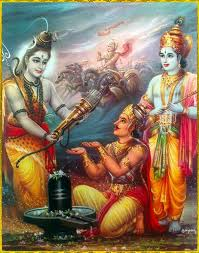

Following Vyas's advice Arjuna started for Mount Kailash. Reaching Indrakeel, a site inhabitated by sages on Mount Kailash, he chose a spot to meditate. He soon went into deep meditation to invoke Shiva. After a long time, Shiva was pleased and decided to fulfill his wishes. Lord Shiva knew what Arjuna will ask but he did not want to give away his divine weapon, Pashupat, without testing Arjuna's readiness to receive it. So Lord Shiva disguised himself as a hunter and started for Indrakeel. Parvati also accompanied him as his wife. The disciples of Shiva (the ganas) were curious and came along in the disguise of women hunters. When they reached the spot where Arjuna was meditating, they saw a wild boar attacking Arjuna. Arjuna was alerted and aimed at the boar with his bow and arrow. Lord Shiva simultaneously aimed at the wild boar. Soon the arrows, from Lord Shiva and Arjuna, struck the boar and it instantly died. Arjuna was disturbed by seeing that his prey was shot at by another person. He challenged the hunter without knowing his identity. This resulted in a big fight between the hunter and Arjuna. Finally Arjuna was exhausted. He requested the hunter to give him time to pray to Lord Shiva to regain strength. The hunter smiled and allowed him the time. Arjuna made an image of Lord Shiva and prayed to him to revive his strength. When he put the garland on the image, to his surprise, he saw the garland on the neck of the hunter. He realized that the hunter was none else but Lord Shiva. He fell at Lord Shiva's feet and offered his sincere reverence.

Having been highly pleased at Arjuna's devotion, Lord Shiva asked him to demand whatever he wanted as a boon. Arjuna requested for the Pashupat weapon from Shiva to be used during the war against the Kauravas. Lord Shiva handed over the Pashupat weapon to Arjuna with the blessing to acquire the capacity to use it at will. Then he disappeared with Parvati and his ganas. When Shiva disappeared, all the other gods and goddesses appeared to congratulate Arjuna and offered their divine weapons in order to fight for the right cause against the Kauravas. Arjuna expressed his sincere gratitude to all of them for helping him. Lord Indra invited Arjuna to visit Indralok, his abode. Soon a chariot arrived and Arjuna left for Indralok. Arjuna arrived at Indra's palace at Amravati in no time and was amazed by its matchless beauty. He was received with due honor as he was the son of Indra. While at Indra's court, Arjuna learned music and dance from Chitrasen, chief of Gandharvas, When Arjuna met Urbashi, he addressed her as "Mother." Urbashi was a heavenly nymph and Indra's court dancer. She was exquisitely beautiful and young for ever. Urbashi tried to make love with Arjuna but Arjuna insisted that he stays as her son. Urbashi was hurt and cursed Arjuna to become a eunuch among charming ladies during his last year of exile. Urbashi was charmed by Arjuna's self control and blessed him by saying, "My curse will prove to be a boon during the last year of your exile in order to conceal your identity."